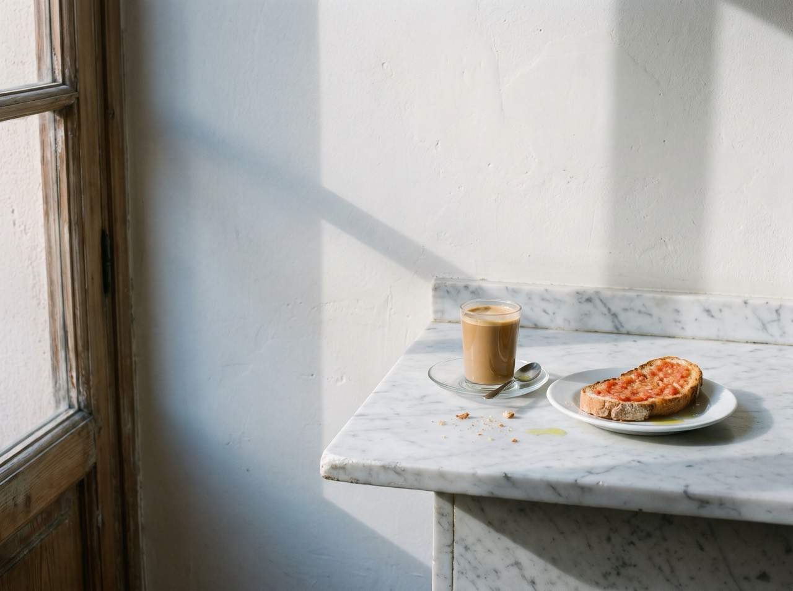
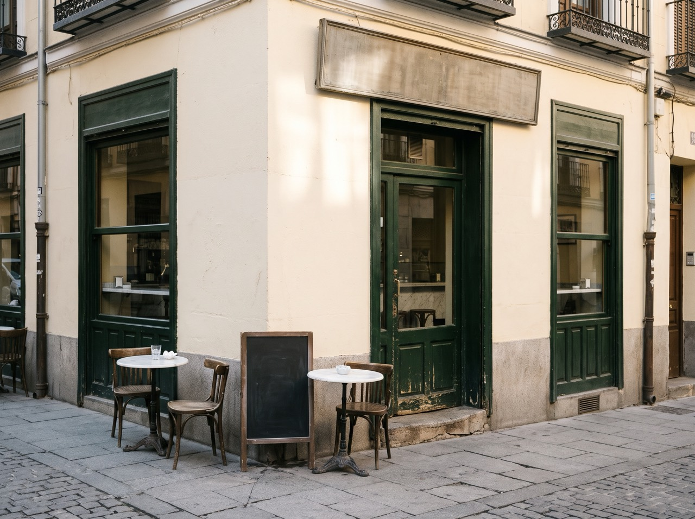

Mañana
Café con leche y tostada con tomate, hasta las 12:00.
La carta de la mañana

En la esquina
Barrio de las Letras, Madrid.
Martes a domingo, de 8:00 a 20:00.
Lunes, cerrado.
El encargo
- Pidió
- Cambiar la carta cada semana sin rehacer la web, y que se pueda pedir para llevar sin llamar.
- Antes
- La carta, en una foto de la pizarra; el horario, solo en Google.
- La idea
- Un reloj de sol: la web enseña lo que se sirve ahora, con la luz de ahora.
- Ahora
- Carta por momentos que Marta cambia desde el móvil, y pedidos con hora y número.